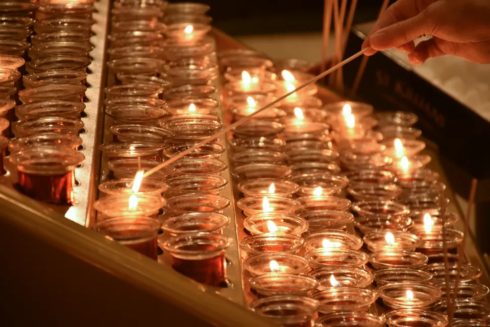
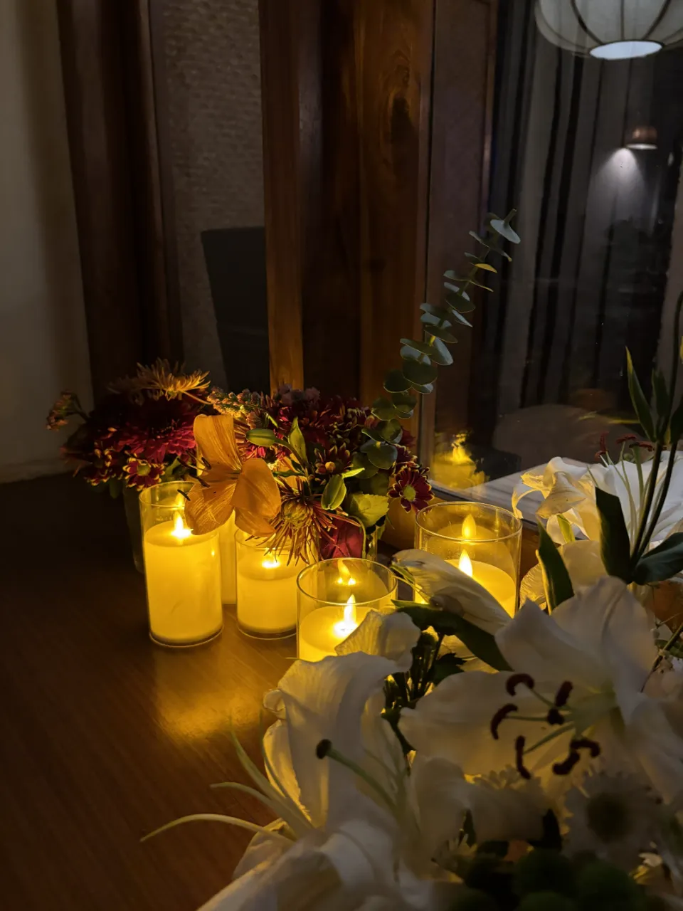
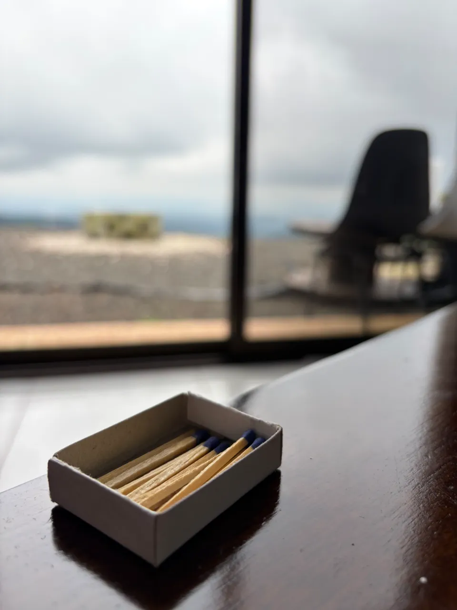
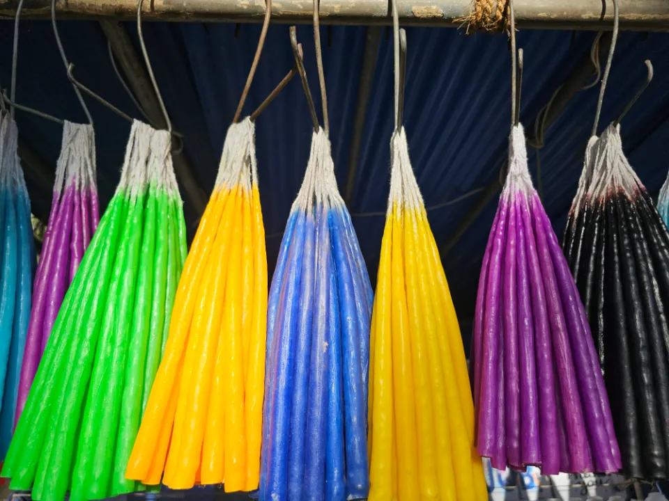
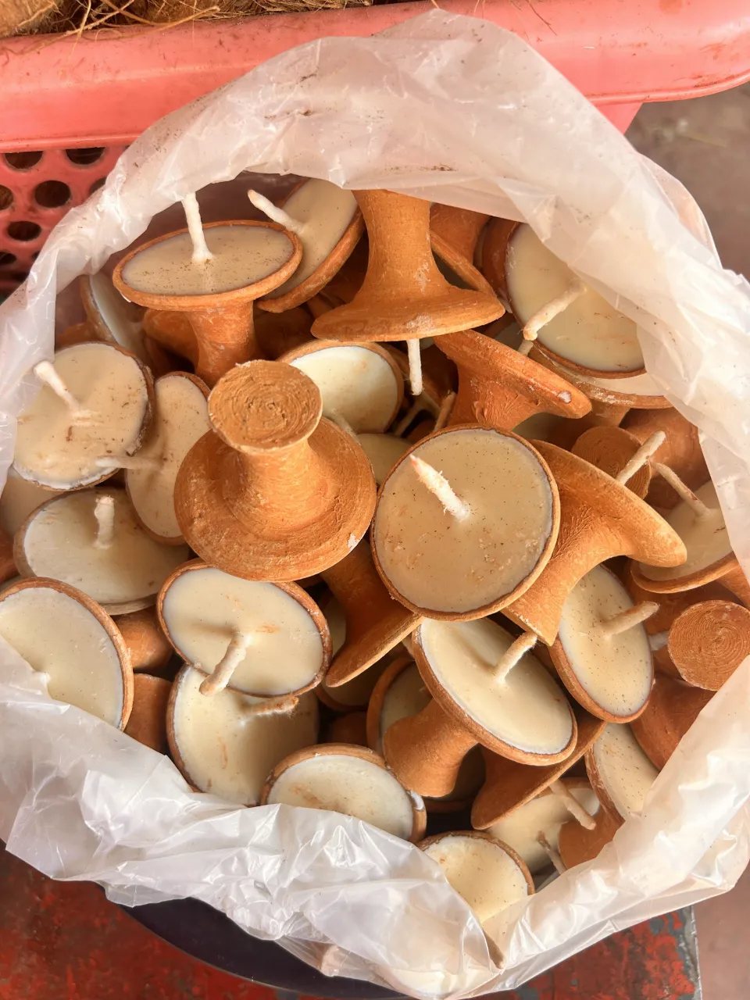
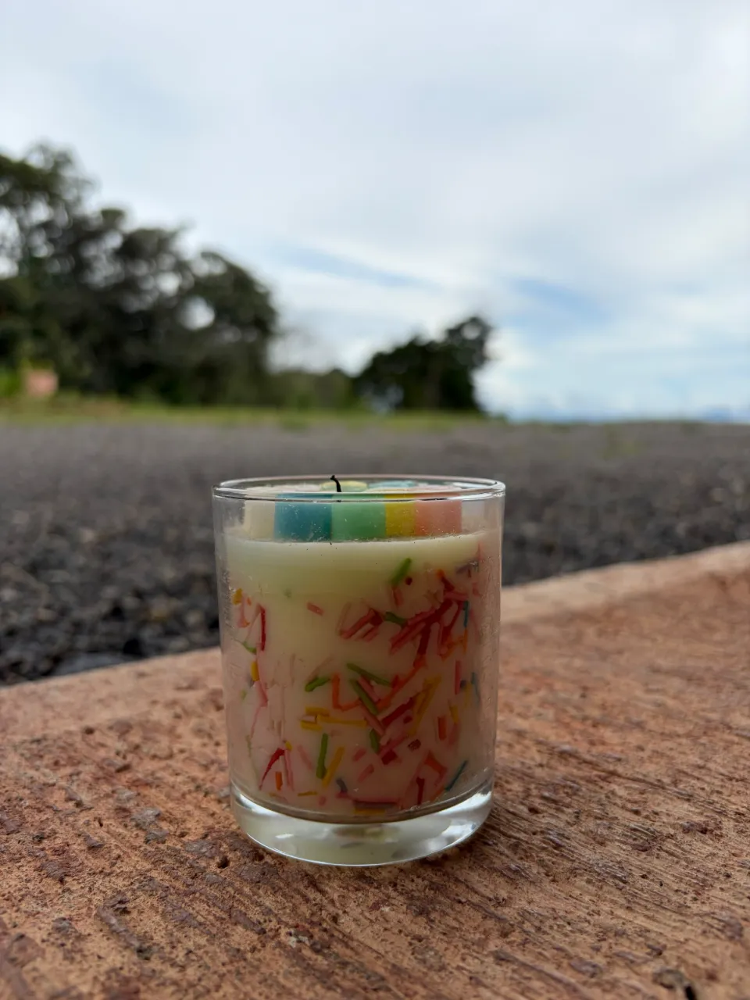
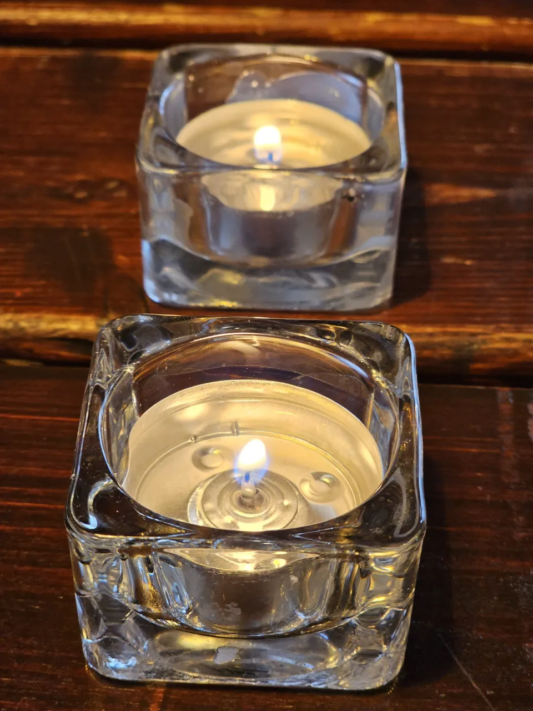
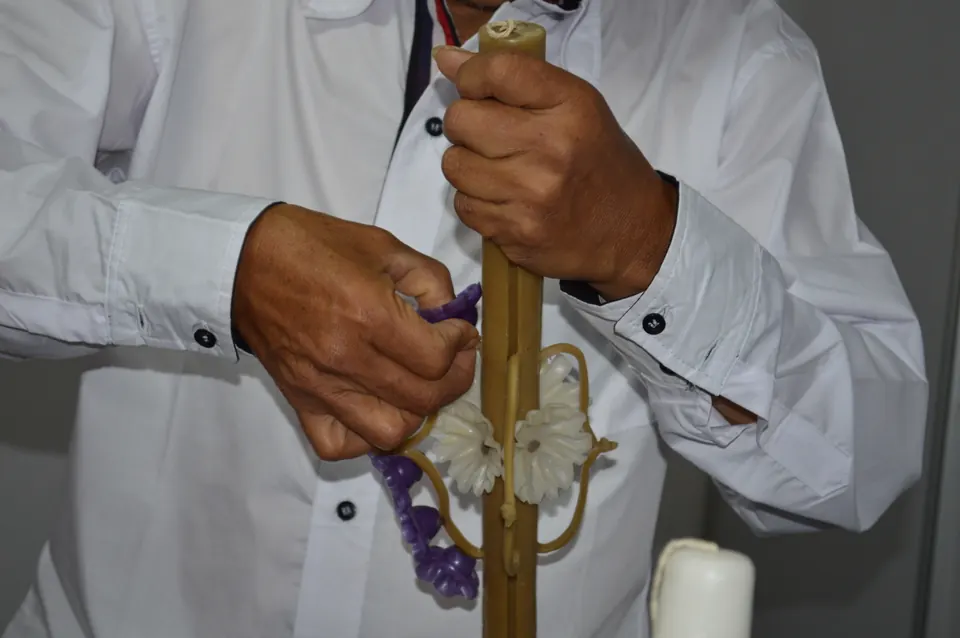
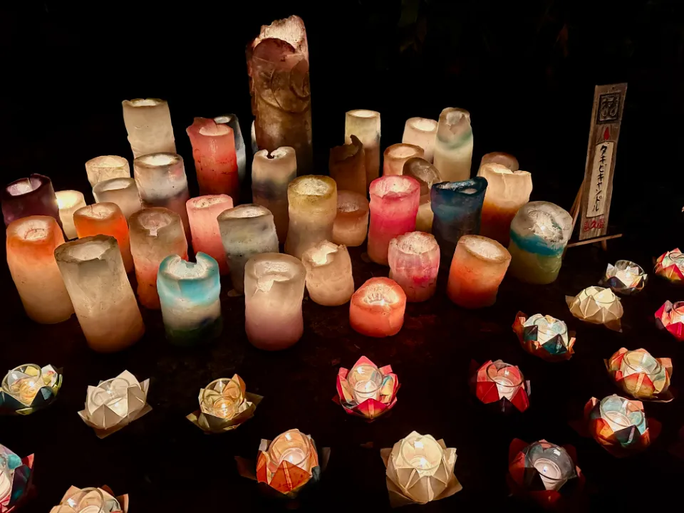
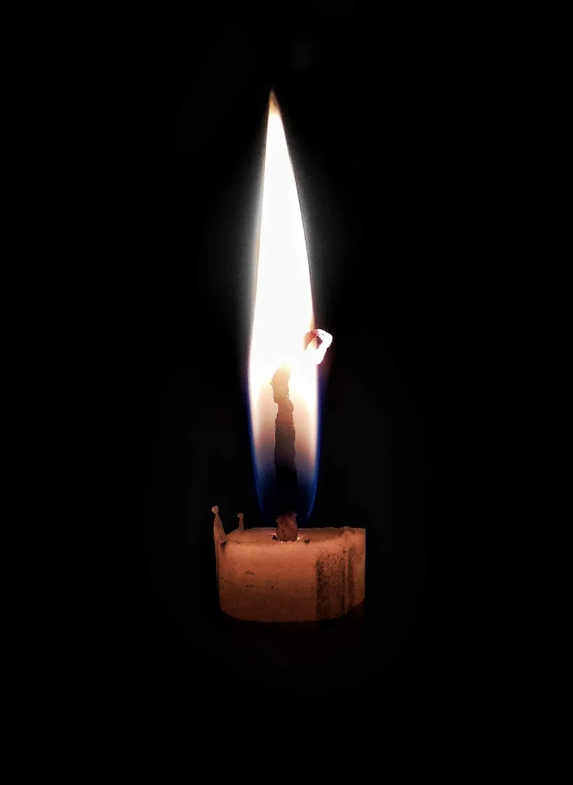

An evening at the studio
Come in, slow down, make a candle.
A hands-on candle-making workshop for first-timers and practised makers — from choosing materials to first light.
Welcome to the studio
A calm room, a warm bench, and time to make.
The studio is set up for making: materials laid out, tools within reach, and guidance whenever you want it.
You don’t need any experience — just curiosity. If you’ve made candles before, there’s room to experiment further.
Meet the studio

Your workshop journey
One evening, four moments.
Every workshop follows the same unhurried rhythm, whatever you decide to make.
-
01
Arrive & settle in
Take a seat at the bench and get to know the materials and the steps ahead.
-
02
Explore the materials
Smell fragrance notes, compare waxes and choose a vessel that feels like yours.
-
03
Create your candle
Melt, blend and pour, with guidance at every step and at whatever pace suits you.
-
04
Finish & first light
Finish your candle and learn how to care for it — the first light is yours.
Workshops
Choose your evening.
Each workshop is a complete, hands-on session. Pick the one that sounds most like you — we’ll guide you from there.
- Container candles
- Enquire
- Choose a vessel, pour your own wax and set the wick — the classic place to start.
- Scent blending
- Enquire
- Spend the evening on fragrance: explore notes, build a blend, and pour it into your candle.
- Pillar & decorative
- Enquire
- Moulds, layers and colour for freestanding candles that look as good unlit as lit.
What you can create
Tapers, tealights, colour and glass.
The same few materials can become very different candles. A few of the forms you can explore:




Candle-making kits
The evening ends. The craft doesn’t.
Our DIY kits bring the studio’s way of making to your own table — to practise what you learned, to experiment, or to share with someone new to it.

The people & the craft
We teach the way we make: unhurried, hands-on and open to ideas.

Guidance, not instructions
We show each step, then step back so you can make it your own.
Room for every level
First-timers learn the essentials properly; experienced makers can explore technique and design.
Care for materials
We take care over what goes into every candle — and show you how to do the same at home.
Why join a workshop
-
Hands-on from start to finish
You make every part of your candle yourself, with help close by.
-
Welcoming to beginners
No experience needed — and plenty to discover if you have some.
-
A candle that’s truly yours
Your scent, your vessel, your design — nobody else’s.

Made together
Light brings people together.
A shared table and a shared craft do the rest. Everyone leaves with something different — and usually a few ideas from the person beside them.
Planning a group evening or a celebration? Get in touch.
Ready when you are
Save your seat at the bench.
Choose a workshop and book your place, or send us a question first — we’re glad to help you pick.
